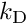
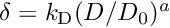

Input File Format: Chamber
Read chamber specification from a spec file.
- Parameters
-
[in,out] file Spec file. [in,out] chamber Chamber data.
The chamber model is specified by the parameters:
- chamber_vol (real, unit m^3): the volume of the chamber
- area_diffuse (real, unit m^2): the surface area in the chamber available for wall diffusion deposition (the total surface area)
- area_sedi (real, unit m^2): the surface area in the chamber available for sedimentation deposition (the floor area)
- prefactor_BL (real, unit m): the coefficient
  
- exponent_BL (real, dimensionless): the exponent


See also:
- Input File Format: Spec File Format — the input file text format
- Input File Format: Scenario — the prescribed profiles of other environment data